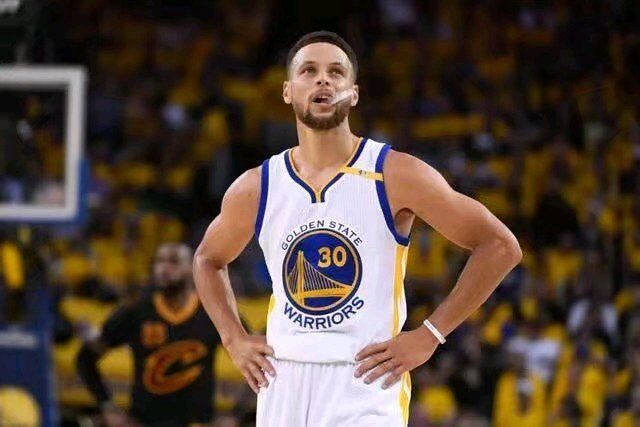
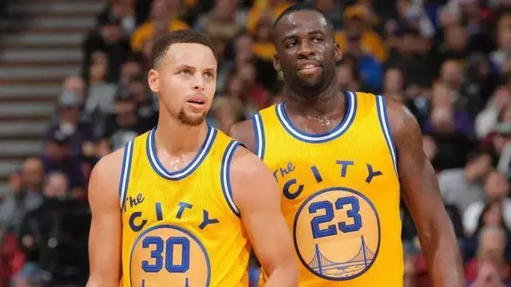
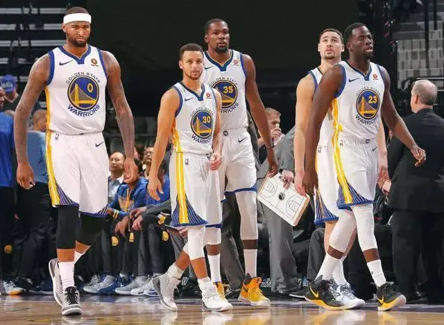
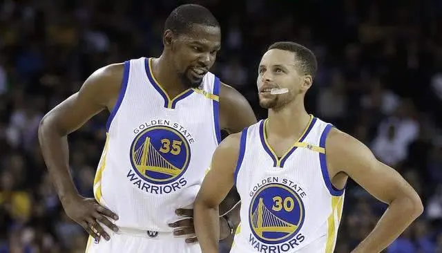

野球帝 2020-06-11
5年总决赛，3次总冠军，库里的NBA生涯，无疑是成功的。
但要说遗憾的是，他在这3次冠军征途中，并没有拿到总决赛MVP。
FMVP嘉奖的是总决赛舞台上，最出色的运动员。
但库日天却没能拿到。
因此，不少球迷在讨论起库里的历史地位，或者勇士三夺总冠军的过程中，往往会拿“库里并没有拿到FMVP来说事儿。”
毫无疑问，MVP是每一个篮球运动员的理想。
但库里没有拿到，是不是他一到总决赛就不行了？
今天，帝哥看到了库里在这5年的总决赛表现统计，发出了这样的感慨：不少球迷真的印象流了。
以下是库里五年总决赛期间的场均数据：
2015年：26分，6.3助攻，5.2篮板
2016年：22.6分，3.7助攻，4.9篮板
2017年：26.8分，5.4助攻，8.2篮板
2018年：27.5分，6.8助攻，6.0篮板
2019年：30.5分，6.0助攻，5.2篮板
虽说伤病是竞技体育的一部分，不应该找借口。
但事实是，2016年库里因为伤病，影响了总决赛的表现，场均只有22.6分，而勇士也遗憾地丢掉了这一年的总冠军。
而另外的4年，每一年的总决赛数据，放在其他的总决赛上，都足以赢得MVP。
2015年的总决赛MVP属于伊戈达拉，这是存在争议的。
并不是说一哥配不上，而是库里才是这支球队的得分王和战术发起者。
2017和2018年，库里没能得到FMVP，这是因为杜兰特在总决赛舞台上的炸裂表现。
而去年，勇士丢掉的冠军，但库里在这轮系列上的表现非常出色，他们掉冠很大一部分原因是因为伤病。
杜兰特和克莱的先后伤缺，实在是太伤了......
没有FMVP，但没有人可以否认，库里是这几年里，NBA出色的控球后卫，放眼NBA历史，他也绝对排得上号。
没有FMVP，是很遗憾。
但是，并不是说库里在征程中表现不行，他早已是金州勇士的图腾。
